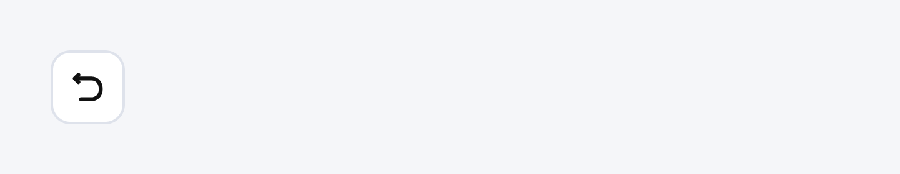
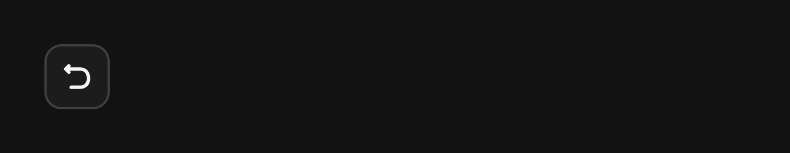

StudioOutlineIconButton
뒤로가기와 보조 툴바 동작에 작은 시각 표면과 충분한 터치 영역을 제공합니다.
- 컴포넌트 ID
studio-outline-icon-button- 분류
- 탐색
- 구현
StudioOutlineIconButton·MyWidget/app/src/main/java/com/mywidget/editor/core/ui/StudioChromeControls.kt:40- 주요 API
- onClick, enabled, modifier, visualSize, cornerRadius, visualModifier, content
- 지원 상태
- 활성
- 비활성
- 눌림
- 변형
- 기본
- 편집기 34dp 표면
- 호출부 아이콘
- 크기
- 터치 48×48dp
- 기본 시각 36dp·반경 10dp
- 편집기 34dp·반경 9dp
- 테마·토큰
- surface
- onSurface
- outlineVariant
- 접근성·사용 규칙
- 아이콘이 현지화된 버튼 이름을 제공하며 비활성 상태를 전달합니다.
- 공통 사용 여부
- 앱 상단바와 설정·갤러리·보관함의 뒤로가기에서 사용
- 설계 품질
- 조작 크기와 시각 크기가 독립됨
- 판단
- 유지
- 판단 근거
- 접근성 대상과 작은 Chrome 표면을 일치시키는 기존 계약을 재사용합니다.
- 구현·문서
- 현재 소스 위치와 심볼 확인
- 렌더링
- 네이티브 캡처 있음
코드 예시
StudioOutlineIconButton(onClick = {}, visualSize = 34.dp, cornerRadius = 9.dp) {
Icon(painterResource(R.drawable.ic_custom_icon_action_undo), contentDescription = "실행 취소", Modifier.size(18.dp))
}Android 네이티브 예시
아래 캡처에 표시된 상태와 기기 조건을 확인했습니다.

411 × 891 dp · 560 dpi · 글꼴 1배 · API 35 · ko-KR
캡처 기준 HEAD
28c96a452 · 소스 지문 2926a62326fe · 2026-11-13T13:54:53.964821Z
411 × 891 dp · 560 dpi · 글꼴 1배 · API 35 · ko-KR
캡처 기준 HEAD
28c96a452 · 소스 지문 2926a62326fe · 2026-11-13T13:54:53.964821Z사용 화면
- 미설정 위젯 시작
- 구성된 위젯 편집·업데이트
- 저장 위젯 보관함
- 위젯 템플릿 갤러리
- AI 위젯 프롬프트
- AI 위젯 질문과 답변
- AI 위젯 미리보기·저장
- 편집 작업 영역과 상단바
- 프리뷰 위 선택·편집 도구
- 위젯 크기 개요·초기화